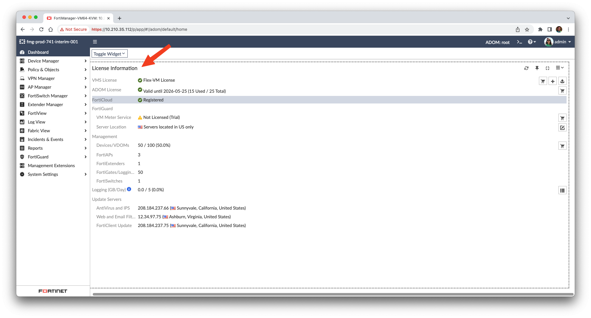
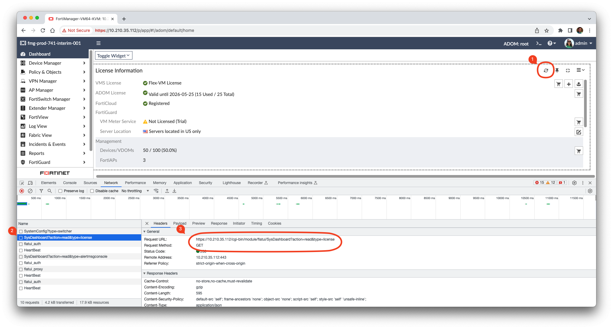

20. FortiManager GUI API#
20.1. Introduction to FortiManager GUI API#
When do you need to use this API?
Most of the time, it’s when you’re in a situation where the FortiManager JSON RPC API doesn’t offer an endpoint to perform an operation which is supported by the FortiManager GUI.
Warning
This API isn’t supported and could be modified without prior notifications.
Only use it when you cannot use the FortiManager JSON RPC API.
In any cases, please contact your Fortinet technical contact in order to double check whether there’s any supported and alternative methods.
20.2. How to Login?#
It’s a two steps process:
Use the following request to get (and save) cookies
CURRENT_SESSIONandHTTP_CSRF_TOKENPOST https://<fmg_ip>/cgi-bin/module/flatui_auth Content-type: application/json { "url": "/gui/userauth", "method": "login", "params": { "username": "devops", "secretkey": "fortinet", "logintype": 0 } }where
usernameandsecretkeyare a declared FortiManager administrator and its corresponding password.HTTP/2 200 set-cookie: CURRENT_SESSION=WwuV5bs3Qmi3cXk665Eu9v6UdWjZVA5TLXjy5l2i8K0F7Jj5I17tSxuk/c9xzpY10XuMEdgzxpRuD1GhS0AC+w==; Path=/; HttpOnly; SameSite=Strict; Secure; Version=1 set-cookie: HTTP_CSRF_TOKEN=0yQEEtY8Q62dbzwKARsEAKLyzEJf9yO; Path=/; Secure; Version=1 { "result": [ { "data": null, "id": null, "status": { "code": 0, "message": "" }, "url": "/gui/userauth" } ] }
You can now keep using those two cookies in your subsequent calls.
Example with
curl/jq:The JSON payload
login.jsonfile:{ "url": "/gui/userauth", "method": "login", "params": { "username": "devops", "secretkey": "fortinet", "logintype": 0 } }
The
curl/jqcommand:curl -k -s -c cookie-jar.txt -H "Content-Type: application/json" https://10.210.35.112/cgi-bin/module/flatui_auth -d @login.json
The
curl/jqcommand output:{ "result": [ { "data": null, "id": null, "status": { "code": 0, "message": "" }, "url": "/gui/userauth" } ] }
The created
cookie-jar.txtfile:# Netscape HTTP Cookie File # https://curl.se/docs/http-cookies.html # This file was generated by libcurl! Edit at your own risk. 10.210.35.112 FALSE / TRUE 0 HTTP_CSRF_TOKEN nDbJ1AXyyeVwW6rOgZVTzHcszM8Fb2u 10.210.35.112 FALSE / TRUE 0 selectadom 1 10.210.35.112 FALSE / TRUE 0 remoteauth 10.210.35.112 FALSE / TRUE 0 auth_state #HttpOnly_10.210.35.112 FALSE / TRUE 0 CURRENT_SESSION w8KxRrvZ6oKDYMZII/jve5hw+BhT6Cejn7qiRR4hgPI30o7AbtmlOWzwTSZY9fmz/7/8l34klFRUPpCSxX6MnPUhL+UrzG2N
20.3. How to get the License Information#
This is to get most of the information exposed in the License Information widget of the Dashboard page:
{kind=link}

Obtain the URL used by the FortiManager GUI
Open the browser’s developer tool
Click the refresh icon as shown below:

You can see that used URL is:
GET https://10.210.35.112/cgi-bin/module/flatui/SysDashboard?action=read&type=license
Use
curl/jqLogin to FortiManager (see section How to Login?)
The
curl/jqcommand:curl -s -k -b cookie-jar.txt -H "XSRF-TOKEN: nDbJ1AXyyeVwW6rOgZVTzHcszM8Fb2u" 'https://10.210.35.112/cgi-bin/module/flatui/SysDashboard?action=read&type=license' | jq
Note
A HTTP header named
XSRF-TOKENhas been added using the value from the cookieHTTP_CSRF_TOKEN
The
curl/jqoutput:{ "adom_enabled": 1, "faz_status": 1, "is_vm": 1, "is_vm_trial_lic": 0, "valid": 1, "duplicate_license": 0, "has_vmmeter": 1, "fortimeter_lic": "None", "type": 9, "max_num_dev": 100, "current_num_dev": 50, "dev_num_count": { "fap_cnt": { "label": "FortiAPs", "val": 3 }, "fex_cnt": { "label": "FortiExtenders", "val": 1 }, "fgt_cnt": { "label": "FortiGates/Logging Devices", "val": 50 }, "fsw_cnt": { "label": "FortiSwitches", "val": 1 } }, "enc_type": 3, "max_num_adom": 25, "max_gb_day": "5", "used_gb_day": "0#0.0", "used_gb_day_history": [ { "date": "Today", "used": "0.00 GB", "is_exceed": 0 }, { "date": "Aug 08, 2023", "used": "0.00 GB", "is_exceed": 0 }, { "date": "Aug 07, 2023", "used": "0.00 GB", "is_exceed": 0 }, { "date": "Aug 06, 2023", "used": "0.00 GB", "is_exceed": 0 }, { "date": "Aug 05, 2023", "used": "0.00 GB", "is_exceed": 0 }, { "date": "Aug 04, 2023", "used": "0.00 GB", "is_exceed": 0 }, { "date": "Aug 03, 2023", "used": "0.00 GB", "is_exceed": 0 } ], "max_disk": "1.00 TB", "used_disk": "0#59.24 GB", "max_disk_gb": "1024", "used_disk_gb": "59.240234", "en_com_fgd_svr": 1, "usg": 1, "usg_has_lic": 0, "account_id": "jpforcioli@fortinet.com", "company": "Fortinet", "licenses": { "ENHN": { "css": "ok", "txt": "24x7 Support (Expires 2026-05-25)", "status": "ok" }, "AVEN": { "css": "warning-red", "txt": "Expired (Expires 2023-04-29)", "status": "warning-red" }, "ADOM": { "css": "ok", "txt": "Web/Online Support (Expires 2026-05-25)", "status": "ok" }, "SPRT": { "css": "ok", "txt": "24x7 Support (Expires 2026-05-25)", "status": "ok" }, "VMLS": { "css": "ok", "txt": "Web/Online Support (Expires 2026-05-25)", "status": "ok" }, "NIDS": { "css": "warning-red", "txt": "Expired (Expires 2023-04-29)", "status": "warning-red" }, "FRVS": { "css": "ok", "txt": "Web/Online Support (Expires 2026-05-25)", "status": "ok" }, "COMP": { "css": "ok", "txt": "24x7 Support (Expires 2026-05-25)", "status": "ok" }, "AVDB": { "css": "warning-red", "txt": "Expired (Expires 2023-04-29)", "status": "warning-red" }, "FMWR": { "css": "ok", "txt": "Web/Online Support (Expires 2026-05-25)", "status": "ok" } } }
{kind=link}
20.4. NDLR: to we need this?#
Use this request to get (and save) those two returned cookies
XSRF-TOKENandcsrftokenREQUEST:
GET https://<fmg_ip>/p/app/
RESPONSE:
200
Some of the returned cookie values should also be placed in HTTP headers
Header name
Use value from Cookie…
X-CSRFTokencsrftokenX-XSRF-TOKENXSRF-TOKENXSRF-TOKENHTTP_CSRF_TOKEN
20.5. How to Logout?#
TODO
GET /p/logout/ HTTP/1.1
Host: secops-demo-001.gcp.fortipoc.net:10421
Connection: keep-alive
sec-ch-ua: "Google Chrome";v="89", "Chromium";v="89", ";Not A Brand";v="99"
sec-ch-ua-mobile: ?0
Upgrade-Insecure-Requests: 1
DNT: 1
User-Agent: Mozilla/5.0 (Macintosh; Intel Mac OS X 11_2_2) AppleWebKit/537.36 (KHTML, like Gecko) Chrome/89.0.4389.90 Safari/537.36
Accept: text/html,application/xhtml+xml,application/xml;q=0.9,image/avif,image/webp,image/apng,*/*;q=0.8,application/signed-exchange;v=b3;q=0.9
Sec-Fetch-Site: same-origin
Sec-Fetch-Mode: navigate
Sec-Fetch-User: ?1
Sec-Fetch-Dest: document
Referer: https://secops-demo-001.gcp.fortipoc.net:10421/p/app/
Accept-Encoding: gzip, deflate, br
Accept-Language: en-US,en;q=0.9,fr;q=0.8,de;q=0.7
Cookie: fortipoc-sessionid-861399adef1f6c9ae779378ce8320d44=fq5lm2e4fi0ngp3drcondpllc0tux4di; fortipoc-csrftoken-861399adef1f6c9ae779378ce8320d44=2fojN3ytY00og4E40kevmdGBO1fptafcKEYZUmulDWgAhvKTUjMDMp68GRGELa3P; auth_state=; remoteauth=; csrftoken=fyE2ywyKJ2DlfdJLuL305H4KoVzQrl9MDXQnKYHAAMV9Si0K08ydcV58wZ8YS15D; APSCOOKIE_11350372132394097185="Era%3D0%26Payload%3D8IcJnfobc13OlgKGuRSwxemnjmn+SbrxQb0VMD2vxbDyrOzP4%2F+9d9JWS7bRwjI4%0Avl7HSlIUF+TOg9Vg5g7m181KDabANtAVnJFFAyXxPj0EbmxaM0jrv8rorwur4P6v%0ASuAO2FiqEa78nCuB7E1OfHxDGA+csTCC4Io+RdU8jFB1Ck6e%2FYo7jgcHCLa+3Dy%2F%0AC1SUPH3RcPniXCZq8Mw7IA%3D%3D%0A%26AuthHash%3DQremxibVWAxsow1l6Z6O2Wqj6w0A%0A"; ccsrftoken_11350372132394097185="2C2CB38EB8E2C4BF96091217890EEAE"; VDOM_11350372132394097185=root; FILE_DOWNLOADING_11350372132394097185="1"; APSCOOKIE_11350372132394097187="Era%3D1%26Payload%3DNQDbvg28bcI5rN6GO8PY3H0o2VTlsrxd0v1yHsS94rbb56IYpss5230QADnw%2FNmg%0AUj4dYt94D4Bo19Vxd+XpuBdqHhah3LnYMcNyzmKcgknwzZPEh1KtM1dZnGTtRPgE%0As45zqPPatEIYIkbMYoDhCzl%2F61BUyPiI5j41vc4oC4PPgvEuWzyjNjxMK7fRbOEd%0Aod7k4%2FpeSoreLKtzQU%2FMEA%3D%3D%0A%26AuthHash%3DYTRdBbhTSA6Ehrbrpg7bxkviF5wA%0A"; ccsrftoken_11350372132394097187="F4BC2DAF413CC3AAA1B35594892868B2"; ccsrftoken="F4BC2DAF413CC3AAA1B35594892868B2"; VDOM_11350372132394097187=root; FILE_DOWNLOADING_11350372132394097187="1"; CENTRAL_MGMT_OVERRIDE_11350372132394097187=1; CURRENT_SESSION=VS6W9ES7yAEunc/H2j9wE3SFGlgF1ZuYxkFIR4u/PS8P3pSfz17KAwtUOv+atzKQV0KBQ+dH+R15LeTh76J7wg==; HTTP_CSRF_TOKEN=JcIFmVQmgfJRcWcuZaDxWzxsbDUDvIr; XSRF-TOKEN=JcIFmVQmgfJRcWcuZaDxWzxsbDUDvIr
20.6. How to get session information?#
Caught in Mantis #0643655.
REQUEST:
POST https://10.210.35.200:443/cgi-bin/module/flatui_proxy
{
"method": "get",
"url": "/gui/sys/session"
}
RESPONSE:
{
"result": [
{
"data": {
"admin_adom": "root",
"admin_prof": "Super_User",
"admin_user": "admin",
"adom_list": [],
"adom_override": 0,
"login_user": "admin"
},
"id": null,
"status": {
"code": 0,
"message": ""
},
"url": "/gui/sys/session"
}
]
}
20.7. How to get the installation log for a given revision?#
TODO
20.8. Some URLs caught in Mantis #0659916:#
Fri 2020-10-23 10:11:38.788 ======== PARAMETERS THAT ARE BEING USED ========
Fri 2020-10-23 10:11:38.788 test type = json
Fri 2020-10-23 10:11:38.788 user = qa12
Fri 2020-10-23 10:11:38.788 password = **********
Fri 2020-10-23 10:11:38.788 json_url = https://10.2.88.20/jsonrpc
Fri 2020-10-23 10:11:38.788 json_web_proxy = 2
Fri 2020-10-23 10:11:38.789 json_web_login_urls = ['https://10.2.88.20/cgi-bin/module/flatui_auth', 'https://10.2.88.20/p/app/']
Fri 2020-10-23 10:11:38.789 json_web_logout_url = https://10.2.88.20/cgi-bin/module/frame/logout
Fri 2020-10-23 10:11:38.789 json_web_url = https://10.2.88.20/cgi-bin/module/flatui/json
Fri 2020-10-23 10:11:38.789 json_web_fast_url = https://10.2.88.20/cgi-bin/module/forward
Fri 2020-10-23 10:11:38.789 rest_file_content = False
20.9. How to perform a device revision diff?#
The GUI-based device revision diff is entirely managed by the GUI side. The FortiManager GUI API is just used to return two revisions as shown below. We ask for a revision diff for device revisions 3 and 4 from device with ID 434.
REQUEST:
POST https://10.210.35.208:443/cgi-bin/module/flatui_proxy
{
"url": "/gui/adom/dvm/device/revision/diff",
"method": "get",
"params": {
"deviceId": "434",
"from": 3,
"to": 4,
"options": 1
},
"id": 1
}
RESPONSE:
{
"result": [
{
"data": {
"version1": "#config-version=FG100F-6.0[...]",
"version2": "#config-version=FG100F-6.0[...]",
},
"id": 1,
"status": {
"code": 0,
"message": ""
},
"url": "/gui/adom/dvm/device/revision/diff"
}
]
}
20.10. How to get the factory default config of a managed device?#
REQUEST:
{
"url": "/gui/adom/dvm/device/revision/content",
"method": "get_download",
"params": {
"deviceId": "201",
"deviceName": "dut_fgt1",
"rev": 0,
"sn": "FGVMULREDACTED77",
"options": 3,
"user": "admin",
"password": ""
}
}
RESPONSE:
#config-version=FGVMK6-6.00-FW-build1803-000000:opmode=0:vdom=0:user=admin
#version=600
#build=1803
#branch_pt=1803
#platform=FORTIGATE-VM64-KVM
#serialno=FGVMULREDACTED77
#logdisk=1
#mgmt.data=00000000000000000000,00000000000000000000,00000000000000000000,00000000000000000000
#mgmt.dat2=00000000000000000000,00000000000000000000,00000000000000000000,00000000000000000000
config system global
set alias "FortiGate-VM64-KVM"
set hostname "FortiGate-VM64-KVM"
set timezone 04
end
config system accprofile
edit "prof_admin"
set secfabgrp read-write
set ftviewgrp read-write
set authgrp read-write
set sysgrp read-write
set netgrp read-write
20.11. How to operate the policy package check operation?#
Trigger the policy package check operation
REQUEST:
{
"method": "create",
"url": "/gui/adoms/157/pkgs/7494/consistency-checker"
}
where 157 and 7494 are the ADOM and Policy Package OIDs respectively.
RESPONSE:
{
"result": [
{
"data": {
"taskId": 365
},
"id": null,
"status": {
"code": 0,
"message": ""
},
"url": "/gui/adoms/157/pkgs/7494/consistency-checker"
}
]
}
It is required to wait for task completion.
Get the Policy Package check result
REQUEST:
{
"method": "get",
"url": "/gui/adoms/157/pkgs/7494/consistency-checker"
}
In fact this request will alway return the latest Policy Package check report.
RESPONSE:
{
"result": [
{
"status": "ok",
"timestamp": "Mon Apr 19 10:14:35 2021",
"type": 1,
"name": "demo",
"pkgname": "ppkg_buggy",
"rec": [
{
"type": 3,
"name": "4",
"full_shadow_count": "3",
"partial_shadow_count": "8",
"none policy count": "0",
"none_rec": [],
"rec": [
[REPORT HERE]
]
}
]
}
]
}
20.12. How to operate a policy package diff operation?#
Trigger the policy package diff operation
REQUEST:
{
"url": "/gui/adom/installation/pkg/install",
"method": "processPreview",
"params": {
"pkgOid": 3292,
"installDevIds": "170-0"
}
}
where pkgOid and installDevIds are the policy package and managed
device OIDs. For the managed device, “170-0” refers to device OID and VDOM OID.
RESPONSE:
{
"result": [
{
"data": {
"isSchd": 0,
"msg": "",
"result": "ok",
"tid": 369
},
"id": null,
"status": {
"code": 0,
"message": ""
},
"url": "/gui/adom/installation/pkg/install"
}
]
}
When we look in task monitor in FortiManager GUI, this action trigger a copy operation.
When the task is complete we have to trigger an install preview operation.
Trigger an install preview operation
Here we could use the normal FortiManager JSON RPC API, but we have to remain in the same session. This is why we’re using the flatui_proxy to trigger the install preview operation.
20.13. How to CSV export components from policy package?#
By components we mean:
Firewall policies
Global header/footer policies
Shaping policies
etc.
It’s a two steps process:
First we need to trigger the export task, mentioning what do we want to CSV export
Then we need to download the resulting file.
20.13.1. Trigger the CSV export task#
That’s an example:
REQUEST:
{
"url": "/gui/adoms/157/pkgs/3292/file-csv",
"method": "create",
"params": {
"content": [
{
"cateId": 181,
"fields": [
"policyid",
"action",
"name"
]
}
]
}
}
Let’s have a look at the content attribute.
cateIdis the type of the policy we want to export. In this example181is for thefirewall policy.Should you want to export
global header policyorglobal footer policyyou will have to use1474or1476respectively.For
firewall shaping-policyorfirewall proxy-policyyou will have to use1640or1844respectively.All of those ID could be obtain by using the commands:
execute fmpolicy print-adom-object <adom> ? execute fmpolicy print-adom-package <adom> 1 <package> ?
It is possible to ask for multiple policy types in a single request:
REQUEST:
{
"url": "/gui/adoms/157/pkgs/3292/file-csv",
"method": "create",
"params": {
"content": [
{
"cateId": 181,
"fields": [
"policyid",
"action",
"name"
]
}
{
"cateId": 1474,
"fields": [
"policyid",
"action",
"name",
"comments",
"srcaddr"
]
},
"cateId": 1476,
"fields": [
"policyid",
"action",
"name",
"dstaddr"
]
}
]
}
}
As you can see, we can also be very specific when it comes to declare the fields we want to be exported in the CSV output. And the other important information, is that the order of the exported fields will be respected.
For instance, in
the above request, the FortiManager will export the fields policyid, action,
name and dstaddr, in that order, for global footer policy (i.e.,
1476).
Obviously, values 157 and 3293 are the ADOM and Policy Package OID
respectively.
In all cases, this is the kind of response you will get:
RESPONSE:
{
"result": [
{
"data": {
"taskid": "a287fb14-0b18-11ec-ae55-02090f000116"
},
"id": null,
"status": {
"code": 0,
"message": ""
},
"url": "/gui/adoms/157/pkgs/3292/file-csv"
}
]
}
20.13.2. Download the CSV file#
REQUEST:
GET https://secops-demo-001.gcp.fortipoc.net:10421/flatui/api/gui/download?filepath=policypackage-3292.csv&downloadname=ppkg_branches-20210901-120531.csv
RESPONSE:
policyid,action,name,scope
"1","accept","ul_egress_traffic","[All Devices/Groups]"
"2","accept","ol_ingress_traffic","[All Devices/Groups]"
"3","accept","ol_egress_traffic","[All Devices/Groups]"
"10001","accept","policy_0001","[All Devices/Groups]"
"10002","accept","policy_0002","[All Devices/Groups]"
"10003","accept","policy_0003","[All Devices/Groups]"
"11001","deny","","[All Devices/Groups]"
"10004","accept","policy_0004","[All Devices/Groups]"
"10005","accept","policy_0005","[All Devices/Groups]"
"10006","accept","policy_0006","[All Devices/Groups]"
"10007","accept","policy_0007","[All Devices/Groups]"
"10008","accept","policy_0008","[All Devices/Groups]"
[...]
The attribute downloadname is optional; if ommited, the CSV file name will
be from the value of the filepath attribute.